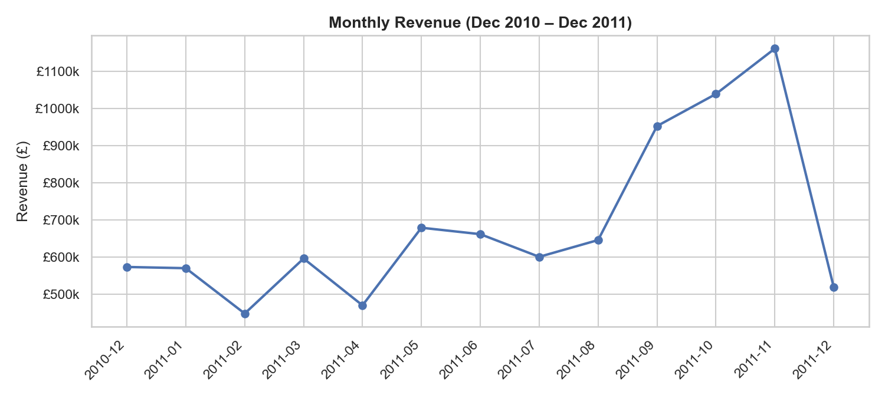
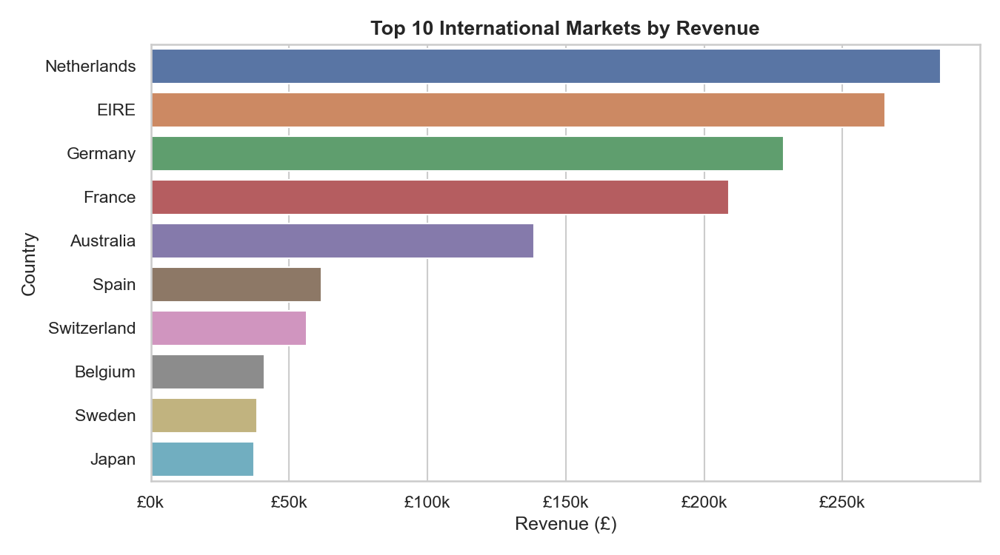
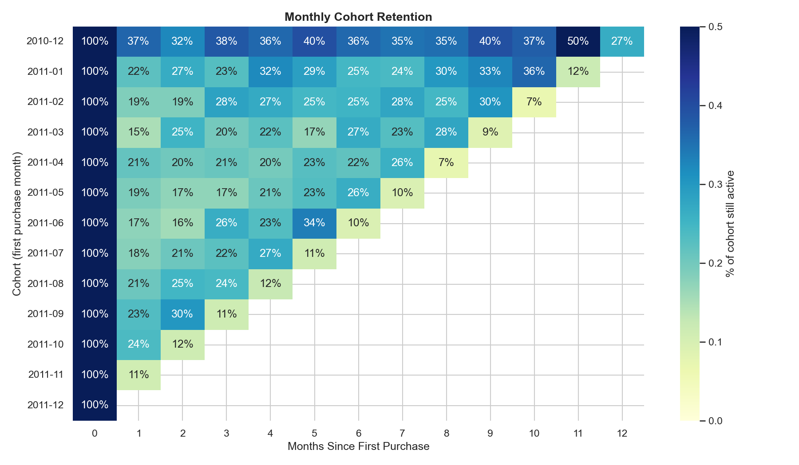

<meta charset="utf-8">
<title>Retail Customer Analytics & Segmentation — Report</title>
<link rel="stylesheet" href="../../assets/css/style.css">

<header class="hero" style="--accent: var(--hue-blue);">
  <div class="wrap">
    <p class="eyebrow">Project 01 · Data Analyst</p>
    <h1>Retail Customer Analytics & Segmentation</h1>
    <p class="lede">
      Segmenting 4,338 real e-commerce customers with SQL + RFM + KMeans to find out who
      actually drives revenue, and what to do about the rest.
    </p>
    <div class="links">
      <a href="../../index.html">&larr; All projects</a>
      <a href="notebooks/analysis.ipynb">Notebook</a>
      <a href="README.md">Project README</a>
      <a href="https://archive.ics.uci.edu/dataset/352/online+retail">Dataset source</a>
    </div>
  </div>
</header>

<main class="wrap report">

  <section>
    <h2>The numbers</h2>
    <div class="stat-row">
      <div class="stat"><div class="value">4,338</div><div class="label">Customers</div></div>
      <div class="stat"><div class="value">£8.9M</div><div class="label">Total revenue</div></div>
      <div class="stat"><div class="value">397,884</div><div class="label">Clean transactions</div></div>
      <div class="stat"><div class="value">37</div><div class="label">Countries</div></div>
      <div class="stat"><div class="value badge-good">62.7%</div><div class="label">Revenue from top 13% of customers</div></div>
    </div>
  </section>

  <section>
    <h2>Problem</h2>
    <p>
      A UK online gift retailer has a year of raw transaction logs (Dec 2010 – Dec 2011)
      but no systematic way to tell which customers matter most, or which are quietly
      slipping away. The goal: turn the raw log into a segmentation a marketing team
      could act on this week — who to reward, who to win back, who to stop spending on.
    </p>
  </section>

  <section>
    <h2>Method</h2>
    <ol>
      <li><strong>Clean</strong> — drop cancellations (invoices starting <code>C</code>), rows with no <code>CustomerID</code>, and non-positive quantity/price. 73% of raw rows survive.</li>
      <li><strong>SQL (DuckDB)</strong> — monthly revenue, top international markets, top products, via real <code>SELECT</code>/<code>GROUP BY</code> queries on the dataframe.</li>
      <li><strong>RFM features</strong> — Recency / Frequency / Monetary per customer, log-transformed to tame skew.</li>
      <li><strong>KMeans (k=4)</strong> — selected via elbow + silhouette score, then named by business meaning.</li>
      <li><strong>Cohort retention</strong> — customers grouped by first-purchase month, tracked forward.</li>
    </ol>
  </section>

  <section>
    <h2>Revenue trend & markets</h2>
    <figure>
      
      <figcaption>Monthly revenue — the Dec-2011 drop is the dataset ending mid-month, not a real decline.</figcaption>
    </figure>
    <figure>
      
      <figcaption>Top 10 markets outside the UK by revenue.</figcaption>
    </figure>
  </section>

  <section>
    <h2>Customer segments</h2>
    <p>Four segments emerge from RFM + KMeans, ranked here by average spend:</p>
    <table>
      <thead>
        <tr><th>Segment</th><th>Customers</th><th>% of customers</th><th>Avg Recency</th><th>Avg Frequency</th><th>Avg Monetary</th><th>% of Revenue</th></tr>
      </thead>
      <tbody>
        <tr><td>Champions</td><td>558</td><td>12.9%</td><td>20 days</td><td>16.0 orders</td><td>£10,008</td><td class="badge-good">62.7%</td></tr>
        <tr><td>Loyal / Steady</td><td>1,448</td><td>33.4%</td><td>46 days</td><td>4.3 orders</td><td>£1,668</td><td>27.1%</td></tr>
        <tr><td>At Risk</td><td>1,393</td><td>32.1%</td><td>59 days</td><td>1.5 orders</td><td>£393</td><td>6.1%</td></tr>
        <tr><td>Lost / Low-Value</td><td>939</td><td>21.6%</td><td>260 days</td><td>1.4 orders</td><td>£387</td><td>4.1%</td></tr>
      </tbody>
    </table>
    <figure>
      
      <figcaption>Left: segments by Frequency vs Monetary (log scale). Right: segment size as % of customers.</figcaption>
    </figure>
    <div class="callout">
      Revenue is extremely concentrated: <strong>13% of customers generate 63% of revenue.</strong>
      "At Risk" customers used to order almost as often as "Loyal" customers, but haven't
      purchased in ~2 months — they're not gone yet, making them the highest-leverage
      group for a win-back campaign.
    </div>
  </section>

  <section>
    <h2>Cohort retention</h2>
    <figure>
      
      <figcaption>% of each monthly cohort still purchasing N months after their first order.</figcaption>
    </figure>
    <p>
      Retention drops sharply after month 1 for every cohort, then flattens for a smaller
      group that becomes the long-term repeat-purchase base — this group overlaps heavily
      with the Champions / Loyal segments above.
    </p>
  </section>

  <section>
    <h2>Business recommendations</h2>
    <table>
      <thead><tr><th>Segment</th><th>Recommendation</th></tr></thead>
      <tbody>
        <tr><td>Champions</td><td>Protect this revenue base — early access, loyalty perks, white-glove service.</td></tr>
        <tr><td>Loyal / Steady</td><td>Cross-sell/upsell campaigns to grow order value; nudge toward Champion tier.</td></tr>
        <tr><td>At Risk</td><td>Time-sensitive win-back offers before they lapse further — best ROI segment to target.</td></tr>
        <tr><td>Lost / Low-Value</td><td>Low-cost re-engagement (email) only; not worth heavy discount spend given low historical value.</td></tr>
      </tbody>
    </table>
  </section>

  <section>
    <h2>Skills demonstrated</h2>
    <div class="tags">
      <span class="tag">SQL / DuckDB</span>
      <span class="tag">pandas</span>
      <span class="tag">RFM Analysis</span>
      <span class="tag">KMeans Clustering</span>
      <span class="tag">Cohort Analysis</span>
      <span class="tag">Data Storytelling</span>
    </div>
  </section>

</main>

<footer>
  <div class="wrap">
    Data source: <a href="https://archive.ics.uci.edu/dataset/352/online+retail">UCI Online Retail dataset</a>.
    Full code in the <a href="notebooks/analysis.ipynb">notebook</a>.
  </div>
</footer>
